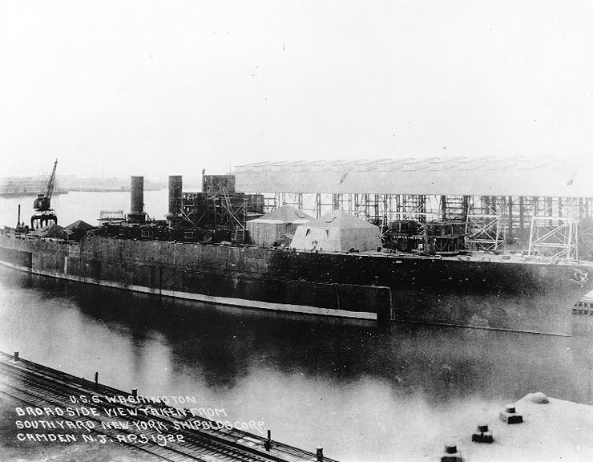
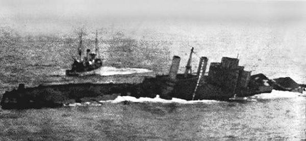
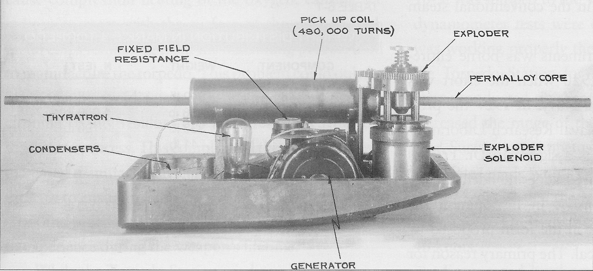
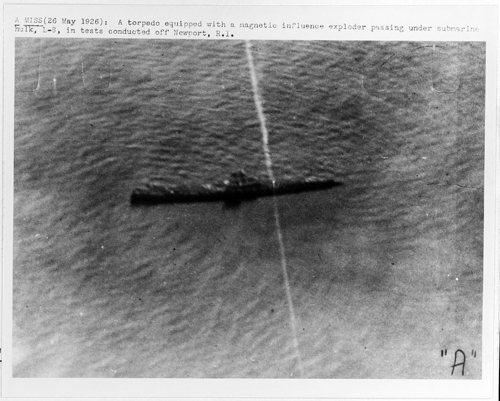
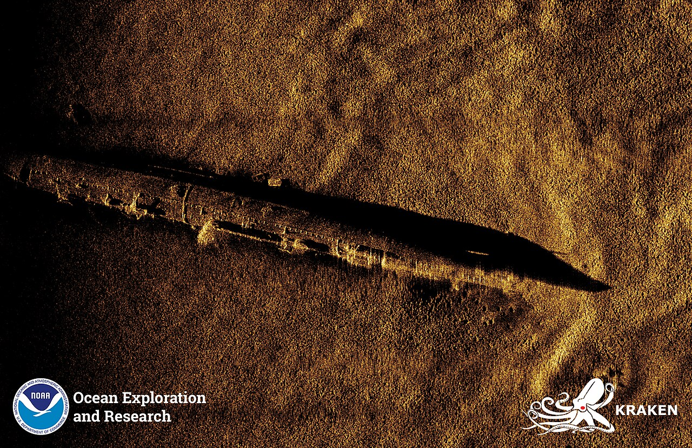
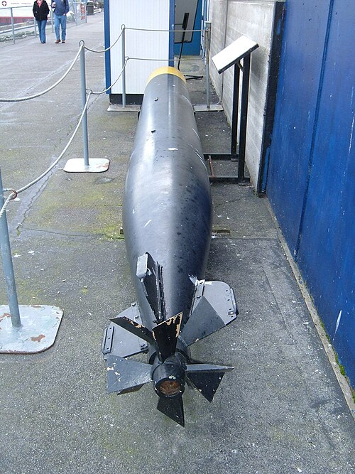
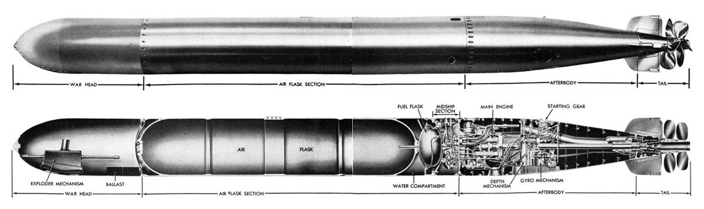
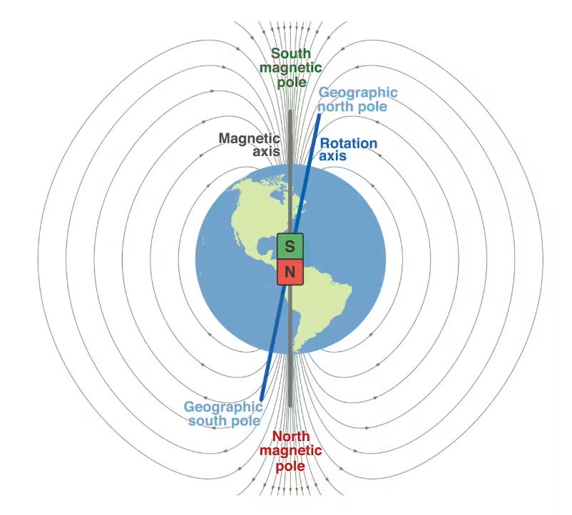
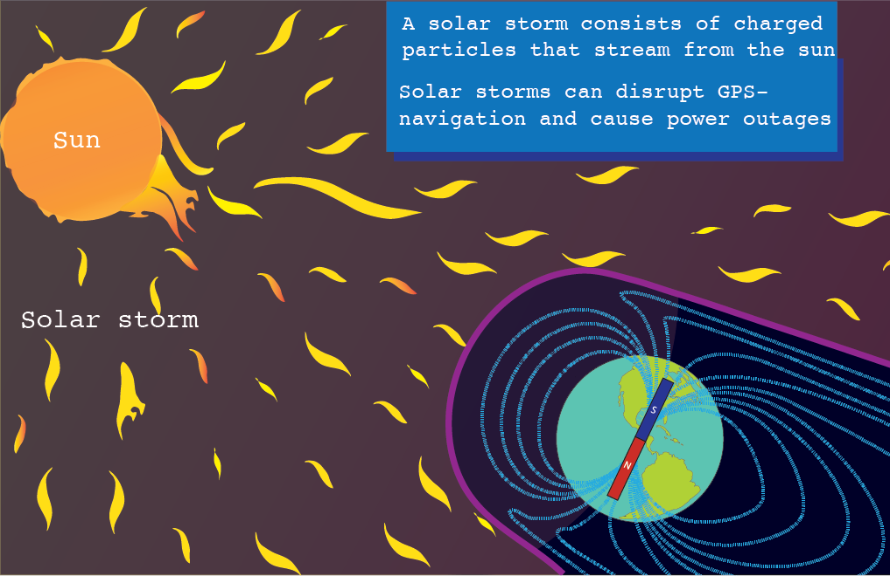

WW2 중 항모에서의 야간 작전 (15) - 지구 전체를 필요로 하는 어뢰
게시: 2025-05-29T06:30:59+09:00
<새로운 어뢰가 필요해> WW1 이후 각국 해군은 어뢰와 잠수함이라는 신무기에 대해 어떻게 대응할지 분주하게 연구. 그래서 나온 것이 지난 번에 설명한 어뢰 방어망과 어뢰 방어 벌지(anti-torpedo bulge, 혹은 그냥 torpedo blister) 등등의 것들. 특히 주요 군함들이 어뢰 방어 벌지를 장착하게 되면서, 이 방패를 어떻게 뚫을 것인지에 대해 각국의 어뢰 전문가들이 골머리를 앓게 됨. 특히 WW1에서의 피해가 적어 상대적으로 국력에 여유가 있던 미국에서는 그에 대해 매우 진지하게 여러가지를 테스트. 가령 아직 미완성인 채로 워싱턴 해군 조약에 걸려 1921년 진수만 시킨 채 녹슬고 있던 전함 USS Washington (BB-47, 3만3천톤, 21노트)를 상대로 실제 어뢰를 발사. 그 결과, 약 220kg의 탄두를 가진 Mark 10 어뢰 2방을 측면에 명중시키고 1톤짜리 항공 폭탄을 지근 거리에서 수중 폭팔시켰는데도 워싱턴은 약간의 침수만 발생할 뿐 거의 피해를 입지 않음. 그 침수로 인한 피해는 전함이 3도 정도 살짝 기운 정도로서, 번역하면 '꿈쩍도 하지 않았음'. 미해군에서는 이대로는 어뢰가 무용지물이 될 수도 있다고 생각하고 새로운 어뢰 개발에 착수.

(1922년 워싱턴 해군 조약이 서명되던 당시의 USS Washington. 바로 1년 전인 1921년 진수된 상태였음.)

(침몰하는 USS Washington. 워싱턴은 어뢰 및 항공 폭탄 실험 이후에도 함내에서 TNT 180kg을 폭발시켜 보았으나 멀쩡했고, 추가적인 항공 폭탄 투하, 그리고 다른 전함들의 14인치 주포 사격을 받은 끝에야 침몰.) 가장 간단한 방법은 torpedo blister고 뭐고 다 뚫어버릴 정도의 강력한 어뢰를 만드는 것. 이건 더 큰 어뢰를 만들어서 탄두에 더 많은 양의 폭약을 넣으면 되니까 제일 간단한 해결책...이라고 생각했으나 그게 또 아니었음. 기본적으로 WW1 이후 개발된 어뢰들이 더 길어지면서 장착한 탄두 중량도 280kg 수준으로 커졌으나, 무턱대고 굵고 긴 어뢰를 만들어낼 수는 없었음. 기존 잠수함들과 구축함들의 어뢰관 지름을 늘리는 것이 쉬운 일이 아닌데다, 기존 어뢰들도 이미 크고 무거워서 좁은 군함에서 다루기 어려운 물건이었기 때문. 특히나 WW1 이후 뇌격기에서 투하하는 항공 어뢰가 주요 무기로 떠올랐는데, 항공 어뢰는 수상함이나 잠수함에서 쓰는 것보다는 작고 가벼워야 했기 때문 더욱 그랬음. 이때 미해군을 사로잡은 생각은 WW1 때 독일해군이 사용하던 magnetic pistol, 즉 자성 신관을 이용하는 것. 이걸 이용한 어뢰는 적함의 측면이 아닌 함저 밑에서 폭발시킬 수 있었고, 그러면 기존 어뢰 수준의 폭발력으로도 경순양함 정도 크기의 군함은 두 동강을 낼 수 있다고 판단되었기 때문.

(자성 신관인 Mark 6 magnetic exploder의 초기형 구조)
이미 독일이 개발한 기술을 적용만 하면 되는 것이었으므로 미해군은 곧 극비리에 시제품을 만들고 실험을 실시. 1917년에 진수되었다가 1922년에 퇴역한 미해군 잠수함 USS L-8 (SS-48, 500톤, 잠수시 10노트)를 타겟함으로 삼은 1926년 실험에서 2번의 실탄 사격이 있었는데, 첫방은 아무 폭발을 일으키지 않고 어뢰가 USS L-8 밑을 그냥 통과해버렸으나, 두 번째 어뢰는 성공적으로 USS L-8 밑에서 폭발하여 격침시킴. 미해군은 결정적인 신무기를 개발했다며 크게 기뻐함.

(1926년 USS L-8 밑을 통과하는 첫번째 불발 어뢰의 사진)

(이건 최근 합성개구 소나(Synthetic aperture sonar)로 탐색한 USS L-8의 잔해 이미지. 500톤 짜리 작은 잠수함인데도 두 동강 나지 않은 것이 보임. 뭔가 잘못된 테스트였다는 소리.) 문제는 1926년의 이 두 방의 테스트가 유일한 실탄 사격이었다는 점. <우주 전함에 자성 어뢰를 쏜다면?> 위에서 미국은 WW1의 피해를 거의 입지 않아 국력에 여유가 넘쳤다고 했는데, 곧 1929년부터 경제 대공황이 시작됨. 1931년 당시 어뢰 1발의 가격은 약 1만불 정도였는데, 이건 현재 기준으로는 약 20만불이 넘는 가격으로서, 우리 돈으로 3억에 가까운 돈. 10년 이상 이어지는 평화 시대였으므로, 미해군도 대공황으로 가뜩이나 어려워진 살림에 굳이 생돈을 퍼부어가며 어뢰 테스트를 할 여유는 없었음. 게다가 미해군은 이미 독일이 만들어놓은 기술을 이용한 주제에 불필요한 군사보안을 지나치게 강조했으므로, 이 자성 신관의 테스트는 제한적으로만 수행했고, 한 방에 3억짜리 어뢰를 날려먹을 수 밖에 없는 실탄 사격은 꿈에도 꾸지 않았음. 그런 문제점 속에서 탄생한 것이 WW2 초기 미해군 내에서 악명이 자자했던 Mark 14 어뢰. 이 어뢰에는 하도 많은 문제점이 있었는데, 가령 세팅한 것보다 어뢰가 더 깊게 항행한다는 문제부터, 접촉 신관의 격침이 불량이라 너무 빠른 속도로 부딪히면 격발이 되지 않는다는 기본적인 문제, 그리고 자성 신관이 목표물보다 너무 일찍 폭발하거나 혹은 아예 폭발을 하지 않는다는 문제까지 그야말로 총체적 난국이었음. 이 문제는 미해군의 관료주의와 맞물려 WW2 초기 어뢰에 대한 큰 불신을 낳았고, 덕분에 미해군 잠수함대와 뇌격기들이 제 역할을 못하게 만드는데 큰 공을 세웠고, 미해군이 이 문제를 잡아내는데 2~3년을 허비함.

(미해군의 재앙 Mark 14 어뢰) 아무리 품질 문제가 심각하더라도 실탄 사격 기록이 수두룩하게 쏟아지는 전쟁 중에 그런 문제를 잡아내는 데에 2~3년이 소요된다는 것은 납득하기가 어려운데, 이야기를 읽어보면 그럴 만한 이유가 있었음. 가령 잠수함이 적함에 완벽하게 조준하여 어뢰를 발사했는데도 폭발하지 않고 그냥 사라지는 것에는 (1) 어뢰의 항행 심도가 너무 깊었거나 (2) 접촉 신관이 불량이거나 (3) 자성 신관이 불량이라는 3가지 원인이 있을 수 있었는데, 이 3가지에 다 문제가 있다보니 그 중 어느 하나가 문제라고 생각했던 미해군에서는 진짜 문제가 뭔지 알아내는 데에만 시간이 한참 걸렸던 것.

(Mark 14 어뢰의 구조. 어뢰는 기본적으로 무인 잠수함으로서, 저기에 컴퓨터와 통신 장치만 달면 수중 드론이 되는 것. 따라서 제조에도 시간이 많이 걸려 1937년 당시 미해군의 NTS (Naval Torpedo Station, 어뢰 제조창)에서는 3천명의 직원들이 24시간 3교대로 근무하며 작업을 했음에도 생산량은 하루 1.5발 정도였다고.) 이 포스팅의 주제는 타란토 야간 습격, 그것도 항모에서의 야간 작전에 대한 것이니 다른 문제는 들여다보지 않겠고 자성 신관에만 집중할 것인데, 실은 미해군이 겪었던 자성 신관의 불발 또는 너무 빠른 폭발 등의 문제는 영국은 물론 독일해군 유보트들까지 동일하게 겪었던 문제. 독일해군이 사용하던 G7a~G7e 어뢰들도 미해군 어뢰와 거의 동일한 문제들이 있었는데, 그 중 자성 신관의 신뢰성 문제는 고딩 때 배우던 지리 및 지구과학 과목과도 상관이 있었음. 자성 신관이 감응하는 것은 강철로 만들어진 군함의 자성이 아님. 생각해보면 당연한 것이, 강철은 자체적으로 자성을 띠지 않음. 전류가 흐르거나, 다른 자석에 연결되었을 때 자성을 띠는 것. 그런데 자성 신관이 군함의 자성에 반응한다는 것은 무슨 소리? 실은 군함의 자성에 반응하는 것이 아니라, 지구의 자성에 반응하는 것. 지구에 있는 모든 것은 지구의 중력과 함께 지구 자기장의 영향을 받음. 강철 덩어리로 이루어진 군함이 바다를 항진하면서 지구 자기장을 왜곡시키게 되고, 자성 신관은 그렇게 지구 자기장의 왜곡과 변화를 감지하여 폭발을 일으키는 것. 바꾸어 말하면, 지구 궤도에서 한참 떨어진 우주 공간에서 우주 함대끼리 전투가 벌어질 때 자성 신관을 장착한 우주 어뢰가 강철로 된 우주 전함에 근접한다고 하더라도, 우주 공간은 지구 자기장 밖이므로 폭발하지 않는 것임. 그런 이유 때문에 독일해군이나 미해군이나 자성 신관을 개발하여 사용하면서 여러 번 골탕을 먹음. 독일해군은 노르웨이 연안에서 유보트들이 발사한 어뢰들이 폭발하지 않거나 미리 폭발해버리는 일을 겪었고, 미해군은 적도 인근 태평양에서 뇌격기들이 투하한 어뢰들이 그런 문제를 일으킴. 이는 미국이나 독일의 병기창이 존재하는 위도에서의 지구 자기장이 저 북쪽 혹은 반대로 저 남쪽의 자기장과는 강도, 특히 수평 요소의 강도가 달랐기 때문. 어릴 때 학교에서 배운 것처럼, 지구는 커다란 자석으로서 그 자력은 지구 남북극에서 튀어나와 반대쪽 극으로 이어지는데, 그러다보니 자기장의 수평 요소 강도는 남극 혹은 북극에서 더 강하고, 그냥 지표면과 거의 평행으로 흘러가는 적도 인근에서는 더 약한 것.

(그림으로 딱 봐도 자기장의 수평 요소 강도가 남극과 북극에서 제일 세다는 것이 이해가 감. 참고로 태양계 행성들 중에서 지구에서 가장 가까운 금성과 화성은 자기장이 거의 없다고. 금성은 워낙 자전 속도가 느려서 그렇다고 하고, 화성은 내핵이 거의 식어버린 상태라서 그렇다고 함.)

(지구가 자석이라서 우주에서 날아오는 온갖 방사선들을 차단해준다는 것이 생명체가 탄생하는데 결정적인 역할을 한 기적 같은 일. 그런데 인간은 그 고마운 지구 자기장을 이용하여 기어코 사람을 죽이겠다고 자성 신관을 만들어 내는 존재...) 그런데 1940년 7월, 영국해군 경항모 HMS Hermes에서 이함한 6기의 소드피쉬 뇌격기가 세네갈 다카르 항에 정박한 리셜리외를 향해 어뢰를 투하했을 때는 그렇게 적도 인근에서는 자기장이 다르다는 것을 알고 있었을까? (역시 또 분량 조절 실패로 다음 주로...)